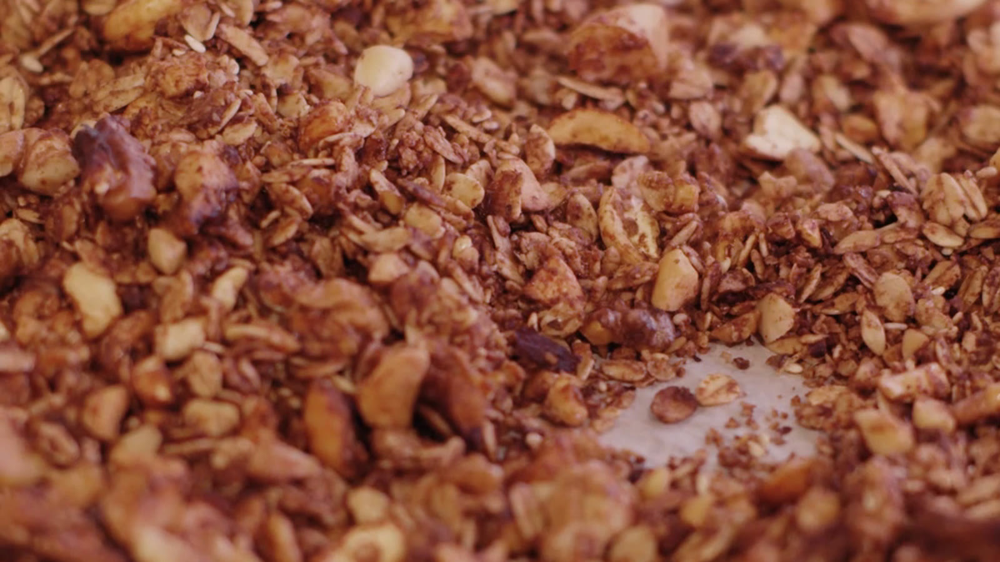

Recipe · About 600 g · Prep 10 min · Bake 25 min
Chocolate Granola
Oats and nuts coated in melted dark chocolate and honey. It comes out of the oven soft and turns crisp on the tray, so let it cool before you touch it.

Ingredients
- 300 g rolled oats
- 150 g mixed nuts (hazelnuts, cashews, almonds), roughly chopped
- 60 g dark chocolate
- 60 ml coconut oil
- 80 ml honey or maple syrup
- 2 tbsp cocoa powder
- 1 pinch of salt
Directions
- Heat the oven to 160°C / 320°F and line a baking tray with baking paper.
- Mix the oats, nuts and salt in a large bowl.
- Melt the chocolate with the coconut oil and honey. Stir in the cocoa.
- Pour the chocolate over the oats and mix with your hands until every flake is coated.
- Spread on the tray and bake for 25 minutes, stirring halfway. Leave it on the tray until cool: it crisps as it cools.
Keep this recipe on your phone
Paste the link to this page into Import in TasteKeep, or tap Share on this page and choose TasteKeep. The recipe lands in your book with the photo, ingredients and steps, and cooking mode runs the 25-minute timer for you.
TasteKeep for iPhone and iPad. Free on the App Store. No account, no subscription.
Photo: a frame from the Pexels series used in our video.